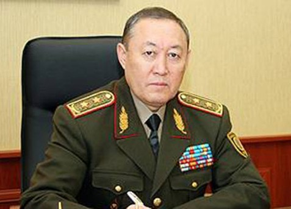
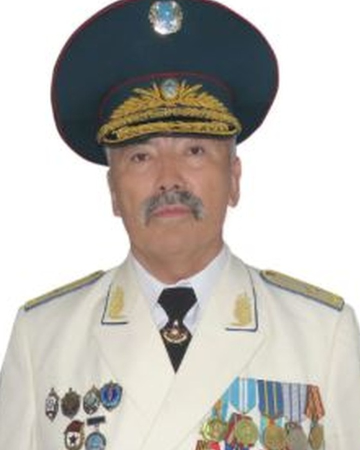
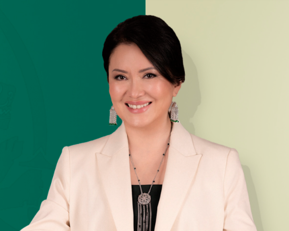
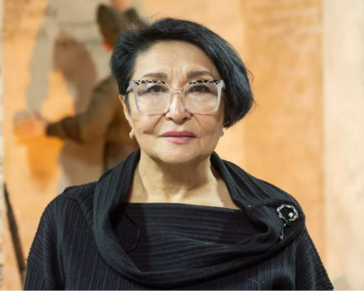
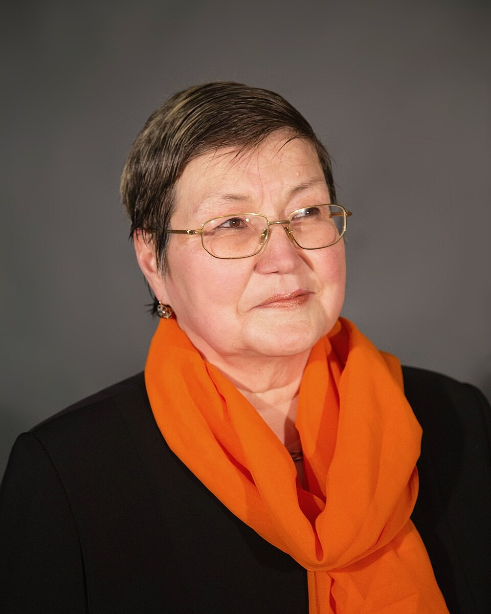
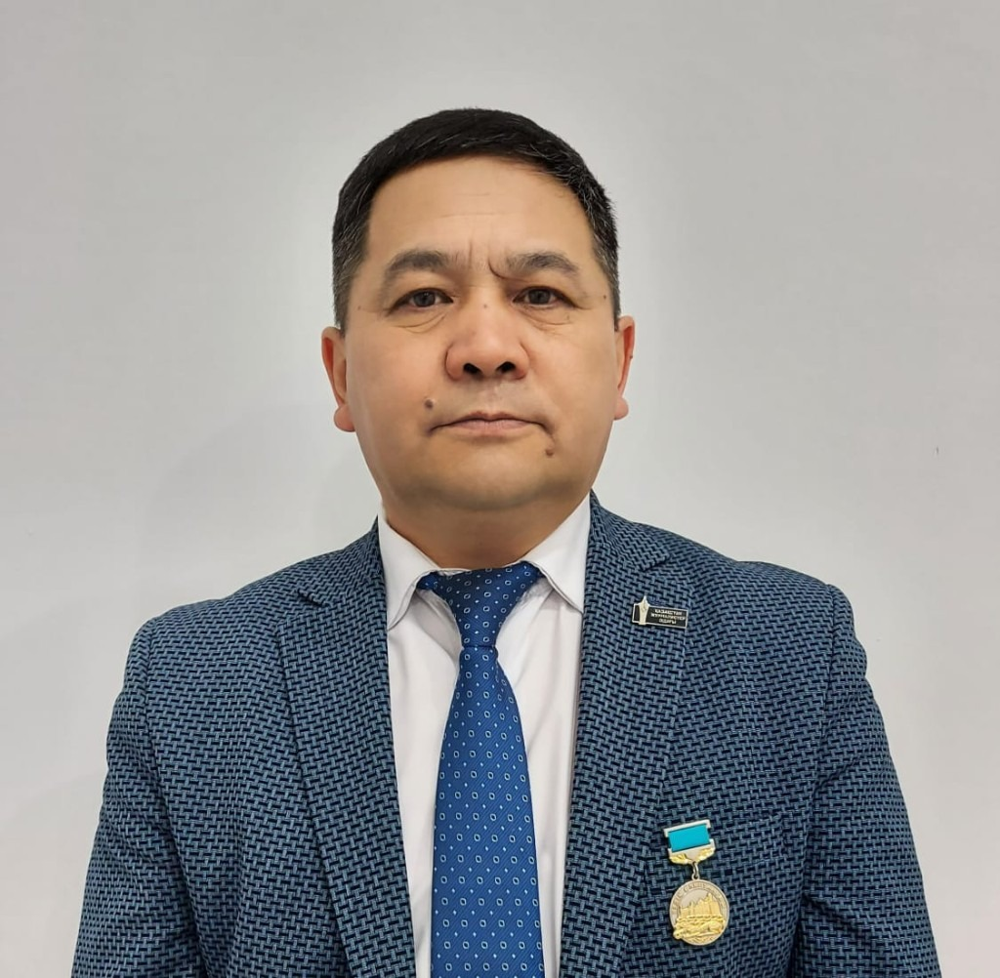

Миссия
Рухы мықты қазақстандықтардың — Отанға қызмет етуге, оның мүддесін қорғауға және елдің болашағын қалыптастыруға дайын патриоттардың жаңа буынын тәрбиелеу.
Біздің миссиямыз — жастарға құмар ойынға тәуелділік, нашақорлық пен діни радикализмге лайықты балама ұсынып, өмірдің жарқын жолын таңдауға мүмкіндік беру.
Ашылу салтанаты
Орталық туралы
«BATYRLAR» әскери-патриоттық орталығы — жасөспірімдер дене, рухани және азаматтық-патриоттық дайындықтан өтетін орын. Біз қызметтегі және запастағы офицерлердің тәжірибесін патриоттық құндылықтармен ұштастырып, ҰҚК, ІІМ және Қорғаныс министрлігінің жоғары оқу орындарына түсуге практикалық дайындық береміз, сондай-ақ өмірде және төтенше жағдайларда қажет дағдыларды үйретеміз.
Өтінішті қазір қалдыруРухы мықты қазақстандықтардың — Отанға қызмет етуге, оның мүддесін қорғауға және елдің болашағын қалыптастыруға дайын патриоттардың жаңа буынын тәрбиелеу.
Сабақтарды Қарулы Күштер, ҰҚК және ІІМ-нің қызметтегі әрі запастағы офицерлері, сондай-ақ әскери нұсқаушылар жүргізеді. Түлектер бейінді әскери және құқық қорғау жоғары оқу орындарына түсуге дайындық алады.
Өтінішті қазір қалдыруМінез, стресске төзімділік, жауапкершілік және өзіндік тәртіпті қалыптастыру.
Көшбасшылықты тәрбиелеу, тәртіпті дарыту, тактикалық, дене және атыс дайындығы, қолданбалы жекпе-жек.
ҚР Қарулы Күштері, ҰҚК және ІІМ қызметтегі әрі запастағы офицерлерінің тәлімгерлігі.
Қорғаныс министрлігі, ІІМ және ҰҚК бейінді жоғары оқу орындарына түсуге дайындық.
Патриоттық акциялар, жарыстар, қарқынды дайындықтар, лагерьлер және ардагерлермен кездесулер.
Волонтерлік жобалар, медиамазмұн және «BATYRLAR» қозғалысын өңірлерге кеңейту.
Оқу бағдарламасы
Арнайы бөлімшелер мен Қарулы Күштер әдістемесіне сүйенген төрт негізгі модуль.
Төзімділік пен тәртіп — мінез қалыптастырудың негізі.
Тренингтер, стресске төзімділік: ерік-жігерді тәрбиелеу.
Тактикалық медицина, әскери топография, атыс тренажерлері — нақты далалық дағдылар.
ҚР мемлекеттік рәміздері, Конституция, құқық пен борыш; әскери жоғары оқу орындарына түсу жеңілдіктері.

«BATYRLAR» әскери-патриоттық орталығының негізін қалаушы және Alash Camp лагерінің жетекшісі
ҚР ҰҚК запастағы полковнигі, заң ғылымдарының кандидаты, «Әскери-патриоттық және іздестіру қозғалысы қауымдастығы» РҚБ төрағасы. Ұлттық қауіпсіздік, ТМД Антитеррорлық орталығы мен БҰҰ құрылымдарындағы тәжірибесі бар. Орталықта стратегия, идеялық дайындық және бағдарлама мазмұнына жауапты.

Стратегиялық даму, цифрландыру және ЖИ жөніндегі төрағаның орынбасары
IT-кәсіпкер, YSOFT.KZ негізін қалаушы. ҚР Денсаулық сақтау министрлігімен бірге іске асырылған әлеуметтік-медициналық IT-жобаның авторы. IT-аналитик ретінде 14 жыл, маркетолог ретінде 8 жыл тәжірибесі бар. Бағдарламалаудан республикалық олимпиаданың жүлдегері.

Жетекшінің орынбасары
Запастағы подполковник, С-300 әуе шабуылына қарсы қорғаныс радиоэлектрондық жүйелерінің инженері. Взвод командирінен әскери бөлім командирінің орынбасары — бас инженерге дейінгі жолдан өткен. Орталықта қолданбалы әскери дайындық пен инженерлік-техникалық модульдерге жетекшілік етеді.

1-взвод командирі
Бастапқы әскери және технологиялық дайындық оқытушысы, педагогикалық өтілі — 23 жыл, «Разведчик» әскери-спорт клубының жетекшісі. «Айбын» және армиялық қолданбалы жекпе-жек жарыстарының жүлдегерлерін тәрбиелеген. Б. Керімбаев атындағы кадет сыныбын басқарады. Орталықта тактика, бастапқы әскери дайындық және спорт бағдарламаларын жүргізеді.
Әр жасөспірімді тәртіп, ерлік пен абырой иелері — Қарулы Күштер, ҰҚК және ІІМ офицерлері қолдайды. Бұл теоретиктер емес, әскери қызметтен өткен және тәжірибесін жаңа буынға беруге дайын тәлімгерлер.
Өтінішті қазір қалдыруҚауымдастық
Қауымдастықтың құрылтайшылары — ел қауіпсіздігі, қорғаныс және тарихи жады саласындағы беделді тұлғалар.
01
«Әскери-патриоттық және іздестіру қозғалысы қауымдастығы» РҚБ төрағасы
ҚР ҰҚК запастағы полковнигі, заң ғылымдарының кандидаты. «BATYRLAR» әскери-патриоттық орталығының негізін қалаушы.

02
ҚР Қауіпсіздік Кеңесінің бұрынғы хатшысы
Запастағы генерал-лейтенант, заң ғылымдарының кандидаты.

03
ҰҚК «Арыстан» арнайы бөлімшесінің бұрынғы командирі
Запастағы генерал-майор, заң ғылымдарының докторы.

04
Қорғаныс министрінің кеңесшісі
Экономика ғылымдарының докторы, профессор.

05
Қоғам қайраткері
Генерал И.В. Панфиловтың немересі.

06
Тарих ғылымдарының докторы, профессор
Әл-Фараби атындағы ҚазҰУ профессоры. Ұлы Отан соғысы туралы 7 кітап пен 100-ден астам жарияланымның авторы.
07
ҚР Қорғаныс министрлігінің Әскери-ғылыми орталығының бұрынғы басшысы
Запастағы полковник, әскери ғылымдарының докторы, профессор.

08
М. Мәметова музейінің директоры, іздестіруші
Ұлы Отан соғысы туралы 6 кітап пен 50-ден астам жарияланымның авторы.
Оқу базасы
BATYRLAR орталығы 1 500 м²-ден астам ғимаратта орналасқан. Мұнда жекпе-жек залы, атыс тирі, бастапқы әскери дайындық кабинеттері, шахмат сыныбы, саптық алаң және әскери-оқу техникасының 6 бірлігі бар. Техника жасөспірімдерге практикалық таныстыру, оның тарихын, құрылымы мен мақсатын оқыту, әскери-патриоттық тәрбие және кәсіптік бағдар үшін пайдаланылады.
Негізгі жауынгерлік танк
Салмағы: 46,5 т
Ұрыс алаңында атыспен жою
Жауынгерлік қуат
Жаяу әскердің жауынгерлік машинасы
Салмағы: 14,3 т
Десантты жеткізу және қолдау
Ұтқырлық
Бронетранспортер
Салмағы: 11,5 т
Жеке құрамды қорғаумен тасымалдау
Қорғаныс
Жауынгерлік барлау-дозорлық машина
Салмағы: 7 т
Барлау және бақылау
Барлау
Гаубица
Салмағы: 3,2 т
Артиллериялық атыс жүйесі
Атыс қашықтығы
76-мм дивизиондық зеңбірек
Салмағы: 1,2 т
Тарихи артиллериялық жүйе
Тарихи мұра
Галерея
BATYRLAR · 360°
Посмотрите на центр, пограничный городок и учебную базу в формате видео 360°.
01
Осмотрите залы, плац и учебную базу BATYRLAR в формате 360°.
02
Загляните в пограничный городок и познакомьтесь с его учебной инфраструктурой.
03
Познакомьтесь с военной техникой учебной базы BATYRLAR.
04
Осмотрите военную палатку и спортивный комплекс центра.
Пікірлер
“
«BATYRLAR» орталығы мінезімді шыңдады. Енді өзіме сенімдімін және нені мақсат ететінімді білемін.
Айдар Нұрланұлы
15 жас · тәрбиеленуші
Сұрақ-жауап
Дене, рухани және патриоттық тұрғыдан дамығысы келетін 12–17 жас аралығындағы жасөспірімдер.
Айына 10 000 теңге.
Орталықта, аптасына 3 рет, әр сабақ үш сағат. Демалыс күндері далалық жиындар мен шеберлік сабақтары өтеді.
ҰҚК, Қорғаныс министрлігі, ІІМ арнайы бөлімшелерінің офицерлері, тәжірибелі педагогтар мен ардагерлер.
ІІМ, Қорғаныс министрлігі және ҰҚК жоғары оқу орындарына түсуге дайындық, мінез, төзімділік пен көшбасшылық қасиеттер.
Байланыс
Мекенжай
Астана қ., Сарайшық ауданы, Мичурино ш/а, Алакөл көшесі, 18, 1-қабат
Телефон
+7 700 100 0011Оқу кестесі
Дүйсенбі / Сәрсенбі / Жұма
15:30 – 18:30
Сенбі–жексенбі — демалыс
WhatsApp арқылы өтініш қалдырыңыз — біз жақын арада жауап береміз.
Өтінішті қазір қалдыру 2GIS